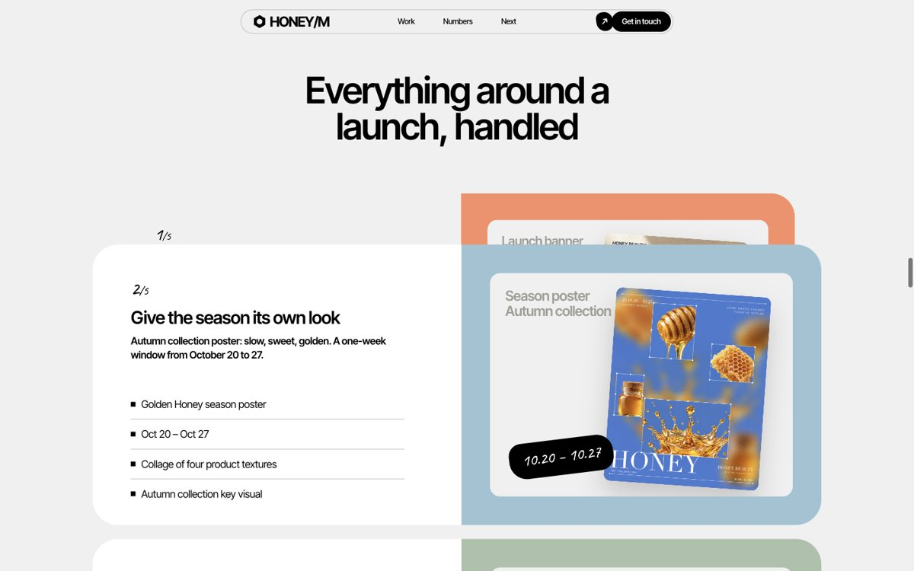
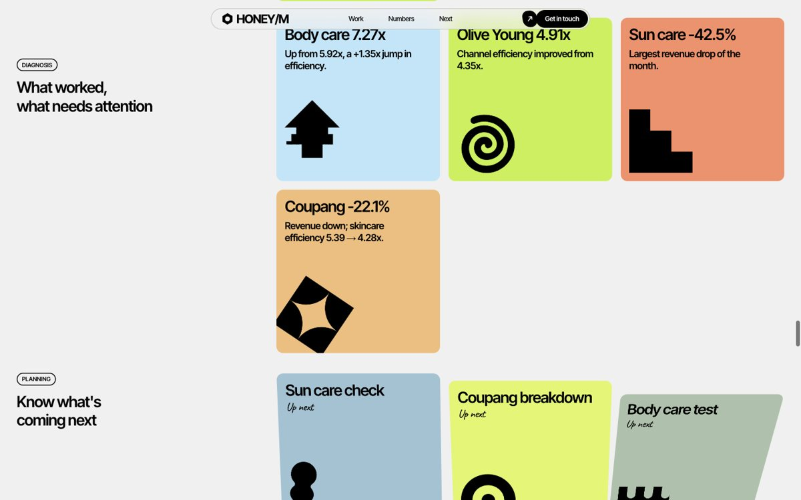

⚠️ 레퍼런스는 무드와 움직임만 빌려요. 그 사이트의 로고 · 글 · 사진을 그대로 가져오면 안 돼요.
03만드는 법 3단계
1
폴더 열기
Claude Code에서 작업물 폴더를 열어요(데스크톱 앱: 새 세션 → 폴더 선택 · 터미널: 폴더에서 claude).
✅ 받는 결과: Claude Code가 그 폴더 안 파일을 읽을 수 있어요.
2
링크 + 요청 한 줄
고른 사이트 링크를 첫 줄에 붙이고 아래 요청문을 그대로 보내요.
포트폴리오 만드는 요청문
[레퍼런스 사이트 링크]
이 사이트 무드랑 인터랙션(스크롤 효과, 호버, 화면 전환)을 살려서,
이 폴더 작업물로 내 웹 포트폴리오를 만들어 줘.
- 숫자는 폴더 파일에 있는 것만 써 줘.
- 폴더 밖 이미지는 쓰지 말아 줘.
- 포폴 안 글은 영어로. 데스크톱 화면에서 멋있게.
- 그 사이트의 로고 · 글 · 사진은 가져오지 말고 무드만.
한국어 포폴이 필요하면 "포폴 안 글은 한국어로"로 바꾸세요.
3
열어 보고 고치기
만들어진 index.html을 더블클릭해 브라우저로 열어요. 마음에 안 드는 곳은 말로 고쳐요.

스크롤하면 작업 카드가 쌓여요(예시)

보고서 숫자는 타일로(예시 · 가상 데이터)
✅ 받는 결과: 내 작업물 · 성과 숫자가 정리된 한 페이지 웹 포트폴리오(폴더 안 index.html).
04막혔을 때
레퍼런스 무드가 약하게 나와요.
링크만으로는 Claude Code가 화면을 못 보고 글만 읽는 경우가 있어요. 레퍼런스 사이트를 3~5장 캡처해서 폴더에 같이 넣고 "캡처 화면처럼 만들어 줘"라고 하면 훨씬 가까워져요.
폴더에 없는 이미지가 들어갔어요.
"폴더 밖 이미지는 다 빼고 폴더 안 소재로 바꿔 줘"라고 하세요. 요청문에 처음부터 넣어 두는 게 가장 좋아요.
숫자가 내 자료와 달라요.
"쓴 숫자를 전부 표로 보여 주고, 어느 파일에서 가져왔는지 적어 줘"라고 확인하세요. 파일에 없는 숫자는 지워 달라고 하면 돼요.
스크롤했는데 사진이 안 보여요.
스크롤 효과 때문에 가려진 채 멈춘 경우가 있어요. "스크롤 효과가 안 돌아도 내용이 보이게 고쳐 줘"라고 하세요.
링크로 보내고 싶어요.
만든 폴더를 Vercel 같은 무료 호스팅에 올리면 링크가 생겨요. 자세한 방법은 EP.15 노트를 보세요.